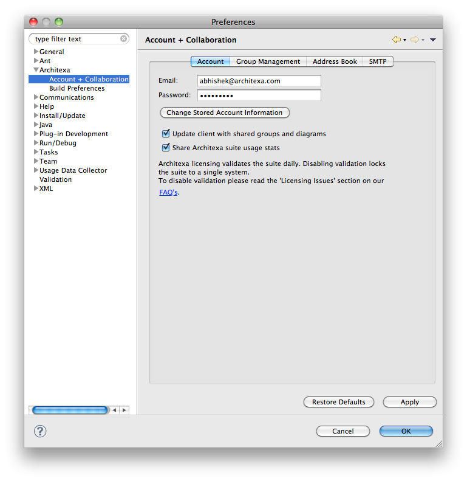
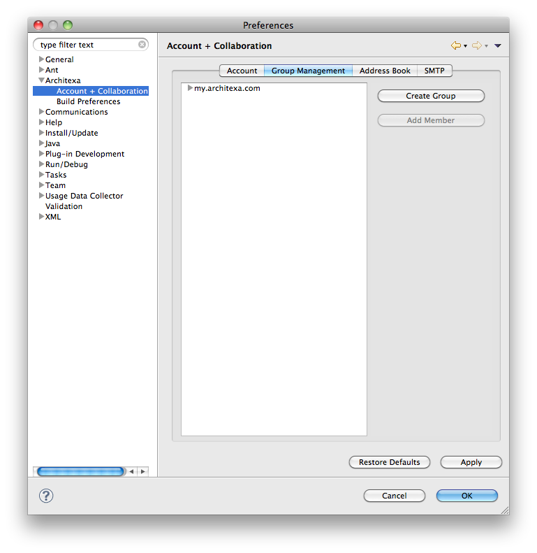
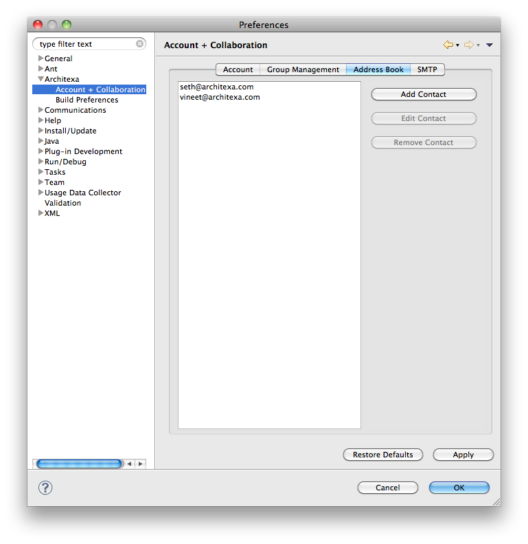
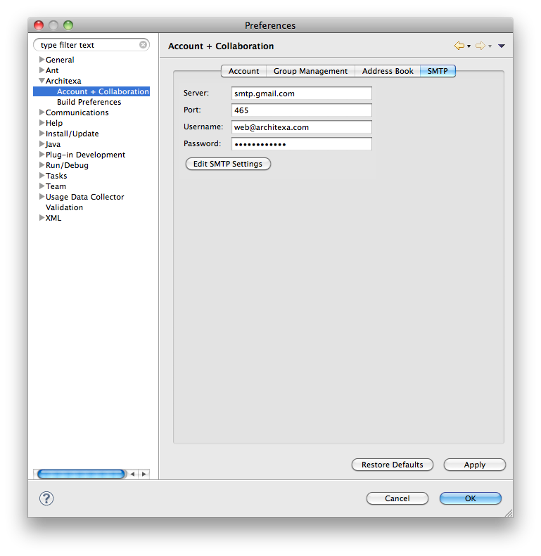

Account + Collaboration
Architexa provides developers with many collaboration options to communicate with others. Preferences such as account information, creating and managing groups, and accessing contacts and configuring SMTP options can be found here. To access these preferences follow the following steps.1) Go to "Window > Preferences" to bring up the Eclipse Preferences.
2) Expand the "Architexa" subsection and go to "Account + Collaboration"
3) The dialog has four tabs, "Account", "Group Management", "Address Book", "SMTP"
The account tab allows you to change information relating to your account.
- The "Account" section shows your information needed to validate your Architexa license. You can change your account email and password by clicking on "Change Stored Account Information".
- Update client with shared groups and diagrams
- Unchecking this option will prevent Architexa from accessing the diagrams others have shared on our public server.
- Share Architexa suite usage stats
- Unchecking this option will prevent statistics about your usage of Architexa from being logged.

Creating and Managing Groups
The group tab contains options for managing the online groups you are a member of.
- When sharing diagrams on the server you can easily create groups from the Architexa client itself. After selecting the server on which you want the group click the "Create Group" button and add the necessary information about the group.
- Once you have created the group you can go ahead and add members to the group who will be able to access the diagrams in the group.

The Address Book tab allows you to manage the contacts that you frequently email diagrams to.
- Architexa allows you to send your diagrams to others by email. You can easily manage your contacts directly in the client in your Address Book.
- You can Add, Edit and Remove contacts from this section.

The SMTP tab allows you to enter custom SMTP data for sending diagrams via email.
- Architexa provides you with a default SMTP server to send diagrams via email, but if you want you can use your own SMTP server to do that.
- Just edit the settings and enter your server information.

---- Your question not answered? Send an email to support@architexa.com ----